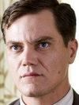
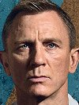

Is the father of Ransom and the husband of Linda. Though he chastises Ransom
for his spoiled
behavior, he is just as big of a freeloader as he relies on his wife's fortune.It is also
revealed
that Richard was having an affair behind Linda's back and tried to threaten her father when he
found
out. Overall, Richard an ignorant man who pretends to be caring but really harbors narrow-minded
and
hateful political beliefs.
Jacob Thrombey
Is the youngest member of the Thrombey family and one of the most unnerving. He
doesn't say much throughout the movie as he is constantly on his phone. However, the rest of the
family says he has some disturbing far-right beliefs with Richard even saying, "The boy is
literally a Nazi."
While Jacob stays in the background for much of the movie, once Marta is revealed to be the sole
heir of his grandfather's fortune, he spews some vile and racist insults at her, proving his
family was correct about his behavior.
Michael Thrombey

Is Harlan's youngest child and he helps run the publishing company, though he
actually does very little work. However, Walt also wants to profit off of his father's name and
keeps pressuring him to sell the rights to his books.
While Walt also treats Marta like family, he quickly changes his tune when she gets all of
Harlan's money. Walt still pretends to be a friendly and supportive person while also subtly
threatening to expose Marta's mother as an undocumented immigrant.
Meg Thrombey
Is the daughter of Joni and someone who seems quite different than the rest of
the family. She sees herself as a caring person and makes an effort to show support to Marta and
the other staff of the house.
When Marta is named as the heir to Harlan's fortune, Meg initially thinks that the family should
respect Harlan's wishes. That changes when she learns her mother cannot pay for Meg's university
on her own. Meg's kind nature disappears as she tells the family about Marta's mother, though
she does quickly regret it.
Hugh Ransom Drysdale
Given how noble and heroic Chris Evans is as Captain America in the MCU, it's
surprising to see him play the least likable character in any movie. But Evans was clearly
having a ball playing against type as the entitled, spoiled and nefarious Ransom Drysdale.
Even before he shows up in the movie, Ransom doesn't come across very well. He is the black
sheep of the family who treats "the help" deplorably and expects to float through life on his
inheritance. In the end, Ransom is revealed to be much worse as he plots to murder his
grandfather, successfully murders Fran, and tries to frame Marta for it.
Benoit Blanc

Johnson has talked about his desire to follow detective Benoit Blanc on other
mysteries, and given how likable of a character he is, it's hard not to get excited by the
prospect. Blanc is a famed gumshoe who finds himself looking into the death of Harlan Thrombey.
Though he is compelled by the facts of the case, he is not a cold or emotionally cut-off
detective like Sherlock Holmes but rather recognizes the good in people and seeks to punish
those who have done wrong.
Linda Drysdale
Is the oldest child of Harlan Thrombey and seems to step in as the head of the
family after his death. She claims to be a self-made woman, despite getting a lot of help from
her father. But unlike some of the other family members, she had no hidden secrets Harlan found
out about. In fact, she seemed to be very close with her father and genuinely misses him.
Despite all of that, Linda is still driven by greed. She acts friendly to Marta at first, but
when her money is threatened, she becomes the most vocal and terrifying voice against her.
Joni Thrombey
Along with Harlan Thrombey's two living children, he also had a son who died
before the events of the movie. Joni Thrombey is his widow and remains close with the family.
However, it seems like she only does so in order to benefit from the money.
Joni is revealed to have been stealing money from Harlan and claiming it was going towards her
daughter's college payments. When Marta gets the inheritance, Joni tries to get her daughter
Meg, Marta's friend, to turn against her.
Marta Cabrera
The movie sets itself apart from other murder mysteries by showing the audience
what
happened with the death very early on in the movie and showing that it is Harlan's nurse, Marta
Cabrera, who is at fault. However, even this is not quite as it seems.
Though she seems to have made a terrible mistake, she is not some self-centered person only
concerned with saving herself. In fact, Marta still thinks of others first even when she is at
risk. In the end, she is revealed to be a good nurse who did everything she was supposed to.
Despite being surrounded by some awful people, Marta remained a good person.
Harlan Thrombey
Though he is dead by the start of the movie, Harlan Thrombey is a very important
part of this story. He is a famed mystery novelist who has supported his family for many years
before getting tired of their deceit and greediness.
Harlan is shown to have an extremely close bond with Marta and is willing to die to protect her.
When he thinks he has been given a lethal dose of morphine, Harlan's only concern is ensuring
Marta is not blamed for this and kills himself to keep her safe.